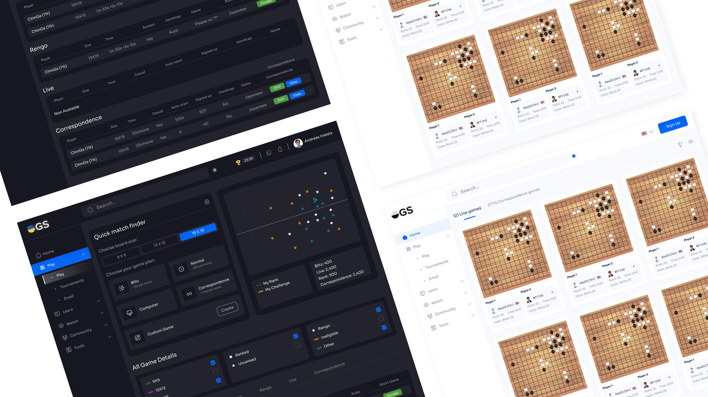
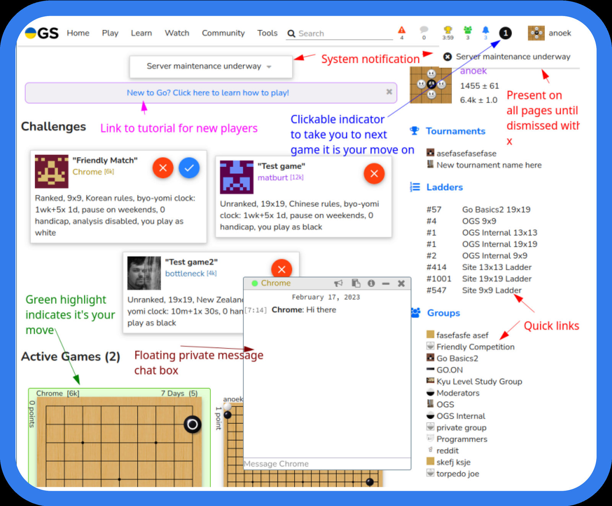
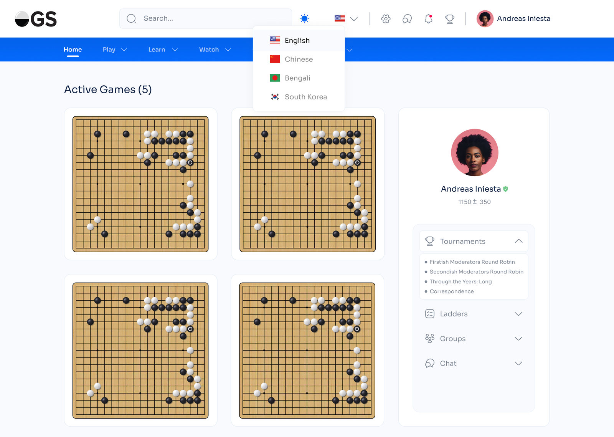
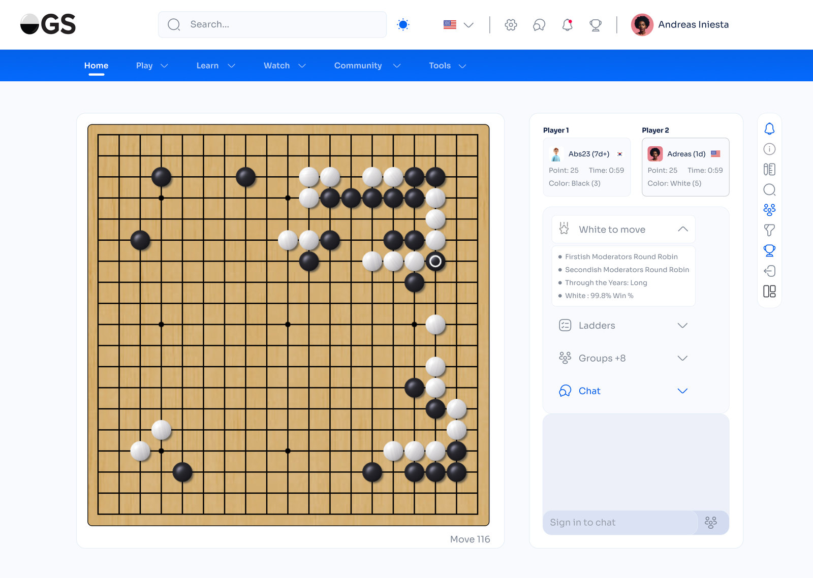
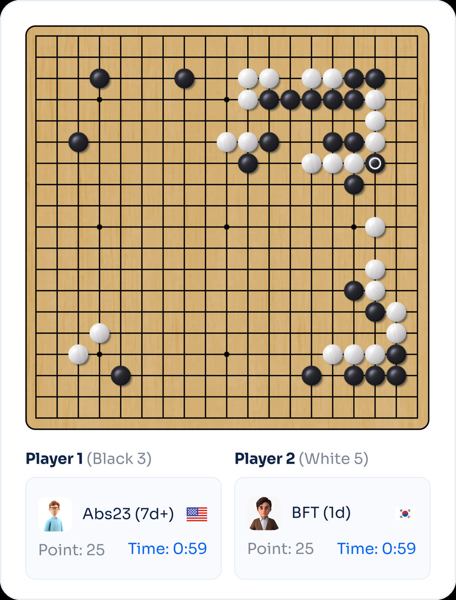
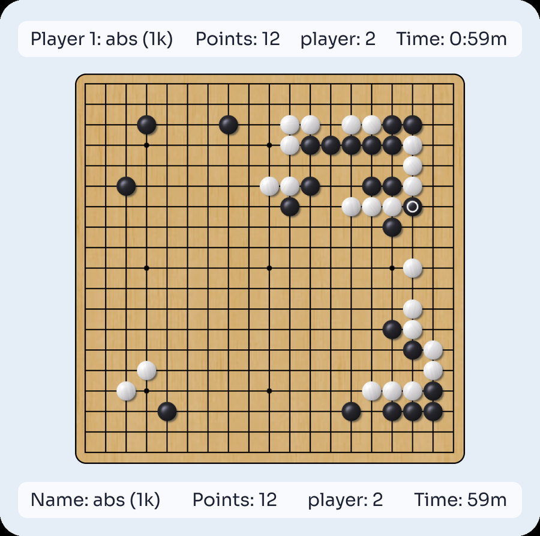
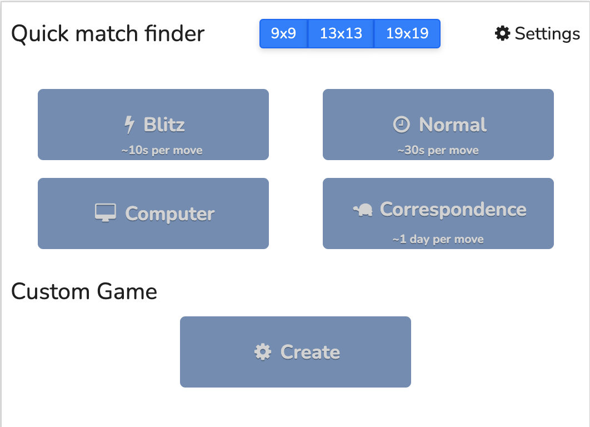
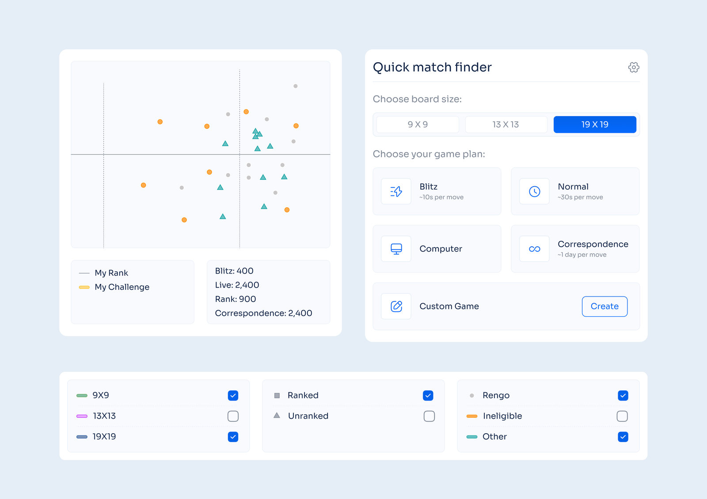
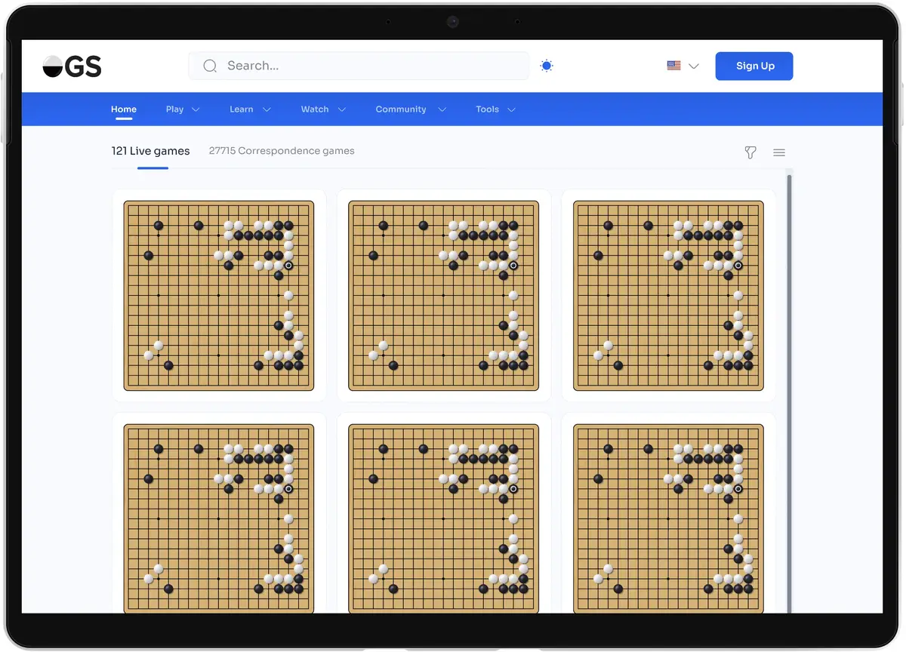
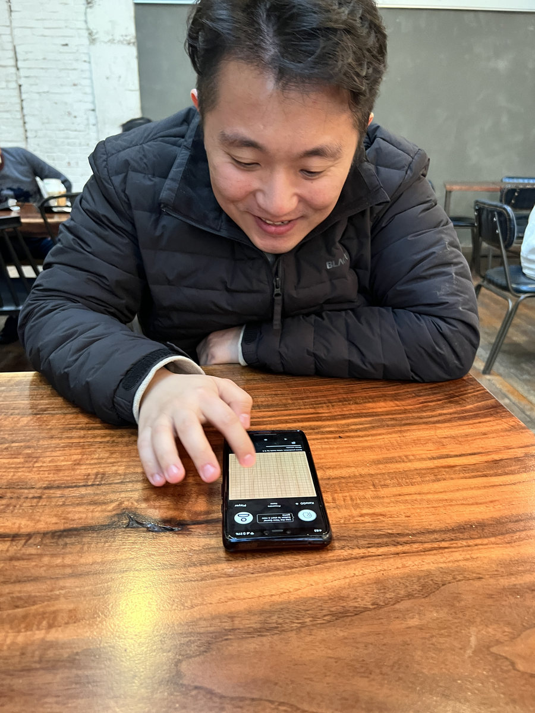

01 — Introduction
Making Go Accessible Across Cultures
Go, known as Baduk in Korea, is a centuries-old strategy game. Online Go Server connects players around the world through digital gameplay, learning, and community.
I led the design side of OGS as Lead UX/UI Designer—a platform where people play Go on the web and on mobile (iOS and Android). I owned research, information architecture, desktop and mobile UI, the design system, prototyping, and usability testing, and worked with OGS’s engineer on the build.

- Project
- Online Go Server (OGS)
- Industry
- Gaming / Online Community
- Service
- Globalization / Product UX / User Experience
- Platform
- Web & Mobile (iOS/Android)
- Year
- 2023
- Role
- Lead UX/UI Designer · with a software engineer, product manager, and the CEO
02 — The Challenge
The first threshold of an unfamiliar game
Making a complex traditional game approachable to new and international audiences.
- Complex onboardingToo many unclear steps before a first game led to high drop-off during sign-up.
- Confusing navigation and matchmakingEntering the lobby and finding an opponent were hard to follow, and players were sometimes matched with mismatched skill levels.
- Inconsistent UI and iconsVisual design and icon language varied from screen to screen, so it was hard to know what to look at first.
- A high barrier for beginnersA dense homepage with no clear call to action left first-time users unsure where to begin.
- Mobile and desktop out of stepThe experience differed across devices, and retention was low among beginners and mobile users.


03 — Understanding the Users
Who stops, and where
Through surveys, usability testing, and card sorting, I studied 20 beginner and intermediate players and compared more than 10 Go platforms, looking closely at KGS and Tygem for lobby matchmaking UX, mobile accessibility, and community features.
- 20active players in a 2-minute survey (beginner and intermediate)
- 10+competing platforms analyzed (focus on KGS and Tygem)
- 60%were confused by lobby entry and matchmaking
- 40%found the iconography outdated and unintuitive
- 90%preferred a simpler layout with cleaner typography
| Online-Go | Tygem | KGS Go Server | |
|---|---|---|---|
| User base | Strength | Strength | Strength |
| Features | Strength | Gap | Gap |
| Easy to learn | Gap | Strength | Gap |
| Free | Strength | Gap | Gap |
| Branding | Strength | Strength | Strength |
StrengthGap
What wasn’t working
- A complicated, fragmented workflow
- Inconsistent visual design and icon language
- Unclear onboarding and match start
- An overwhelming homepage with dense information
Research figures come from a small survey (20 participants) run during the 2023 project.
04 — From Cultural Context to Product Experience
From cultural context to a product people understand
Translation alone wasn’t enough. I redesigned the information architecture and flows so the structure and concepts of an unfamiliar game make sense from the screen itself.
- Clear information architectureRestructured navigation around core actions such as Play, Learn, Watch, and Community, with clearer labels and hierarchy.
- Navigation that explains itselfUsed intuitive names instead of unfamiliar terms, showing clearly where you are and where to go next.
- Onboarding for newcomersDesigned a sign-up flow with visible steps and progress, plus an optional quick-start tutorial tailored to skill level.
- Getting into a gameA quick match finder lets players pick board size and game speed and find an opponent right away, cutting the decisions before a first game.
- One experience for players everywherePut language selection and country display into the post-sign-up flow, and applied the same color, type, and icon rules on every screen.
- Responsive product designDesigned responsive screens so structure and actions carry over between desktop and mobile.




The same game on the web and on mobile (iOS and Android): board, player details, and remaining time follow the same hierarchy on every device.
05 — Design Exploration & Solution
Explored, compared, and checked again






Online-Go · Color
- Primary / 1
#0461E9 - Primary / 2
#1D2333 - Secondary / 1
#F9FAFE - Secondary / 2
#E5EEF6 - Text / B-1
#0F2346 - Text / B-2
#8C94A1
Text Black GrayScale
Sora Heading · Montserrat Paragraph

“I love OGS and it’s pretty easy to use.”
— Guerrilla test participant, OGS user
06 — Results & Impact
More people playing, for longer
Independent of this redesign, Online Go Server is a public service used by Go players worldwide. The figures below are not the size of the platform; they are changes recorded in the project after the redesign.
Global players
+20%
growth in new registrations from non-English-speaking regions
- +15%Monthly active users (MAU)
- +20%New user registrations
- +25%Matchmaking completion rate
- +28%Average session duration
Figures are as recorded in the 2023 project (original portfolio) and reflect several improvements applied together.
07 — Explore the Live Product
See it live
OGS is a public service anyone can visit. The current site has continued to be run and changed by the OGS team since this project, so it may differ from the designs shown here.
Visit Online Go Server (opens in a new tab)Send a project inquiry
Next Project